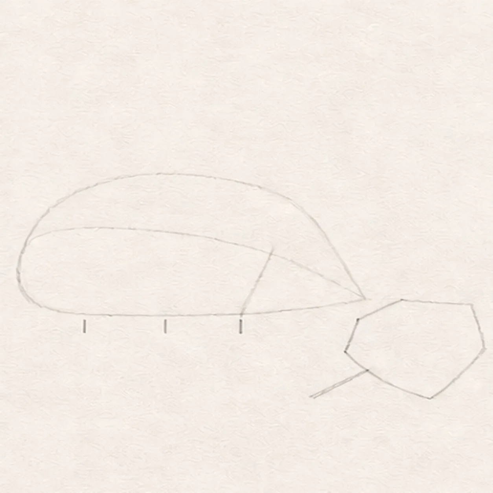
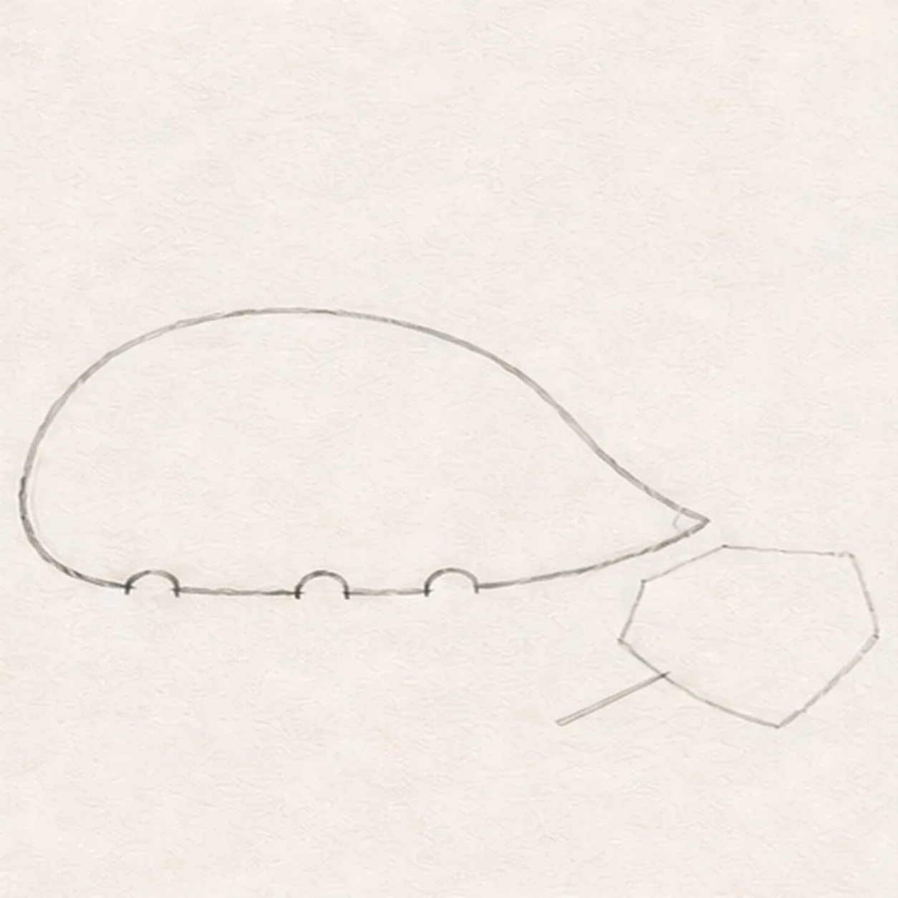
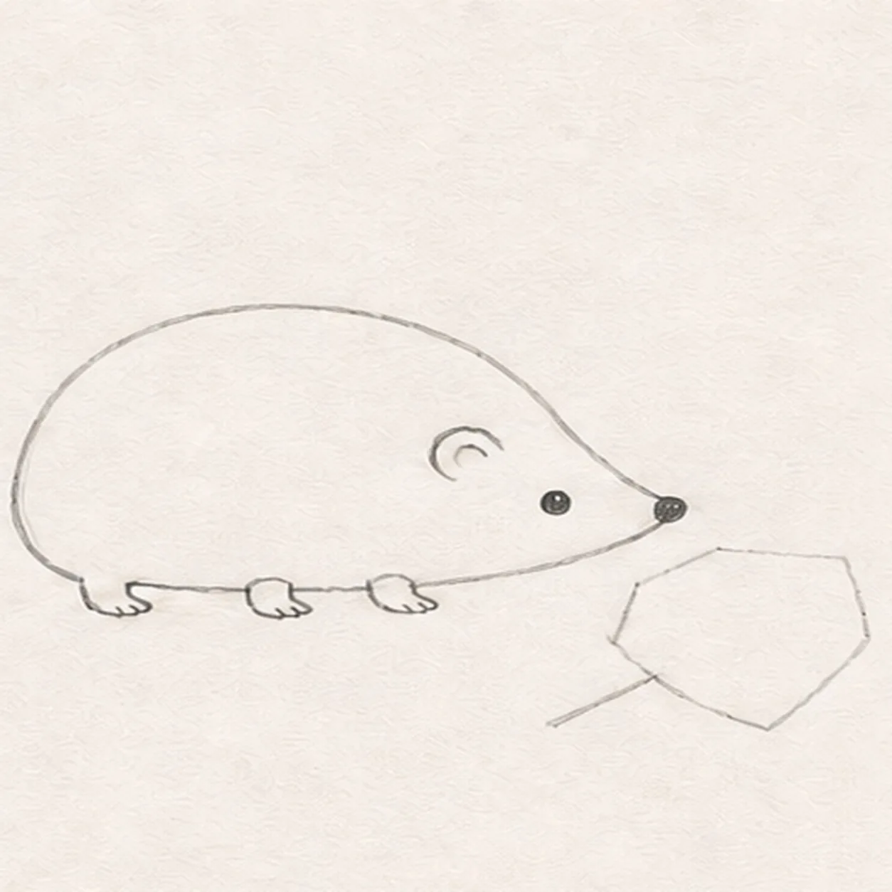
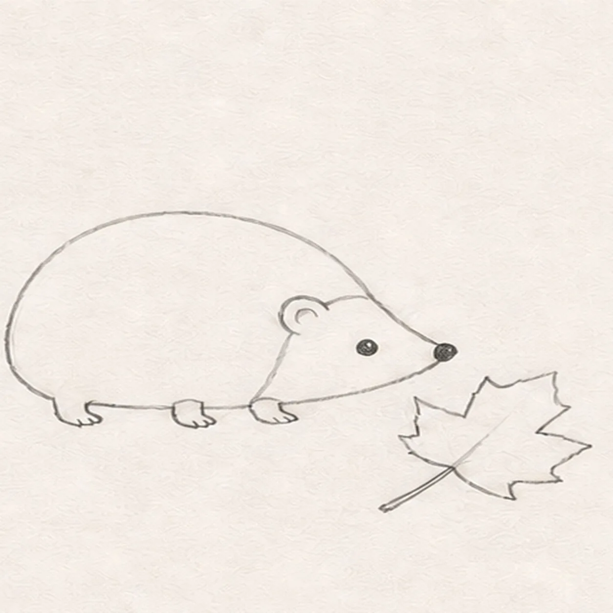
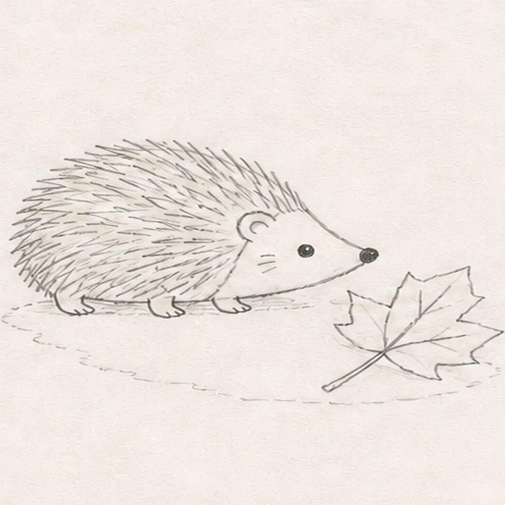
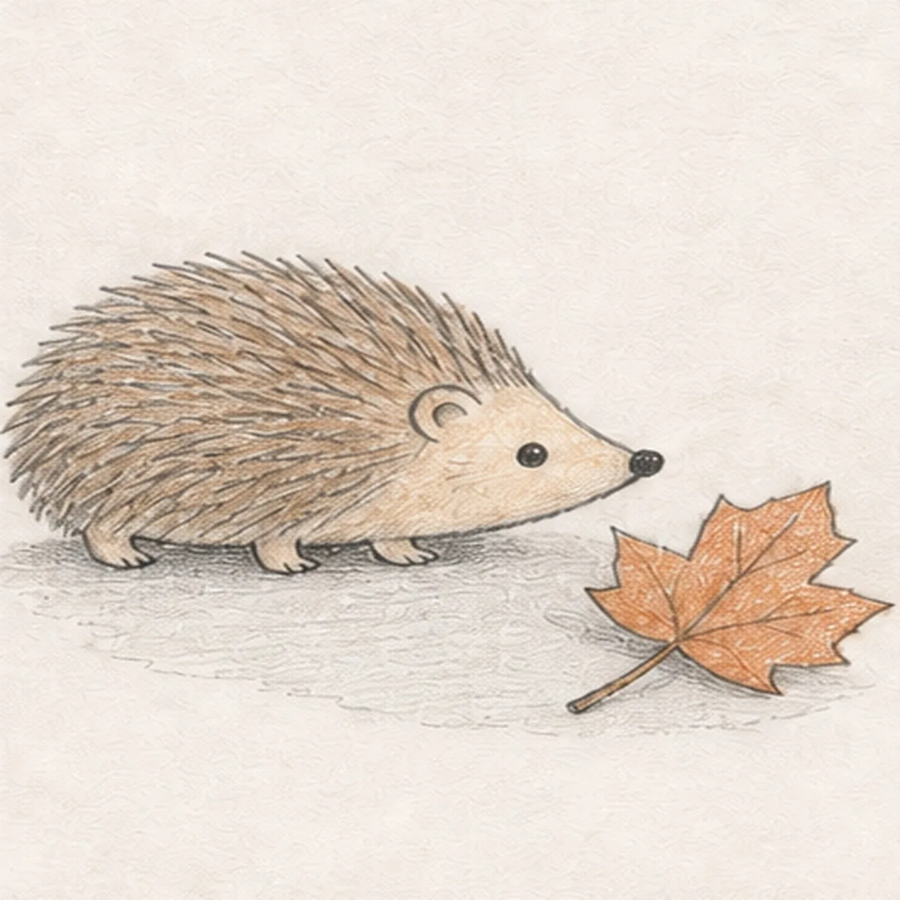
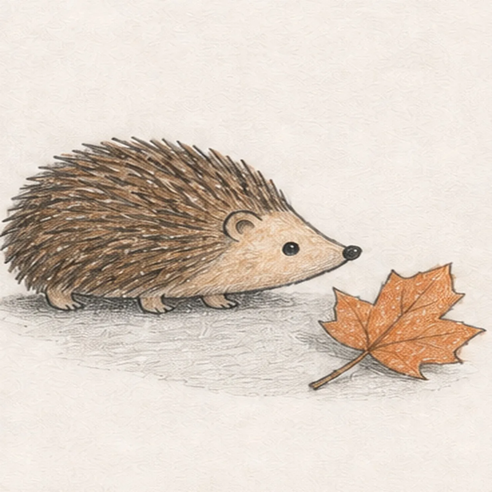

From the archive
Let's draw a hedgehog with a fallen leaf
Treat this as one small practice round: build the subject lightly, notice the shapes, then darken only the lines that help the finished sketch.
-
01

Map the hedgehog and leaf
Draw one low body bean, a pointed face wedge, a curved coat boundary, exactly three tiny foot ticks, one simple leaf envelope with a stem route, and one broken shadow route in pale HB.
Sketch tip: Keep this first frame under two minutes. The leaf is only a broad envelope here, and the three foot ticks reserve the visible feet without closing them.
-
02

Shape the low silhouette
Wrap the guides with one rounded back, a small pointed muzzle, and a low belly that stops at all three reserved foot gaps.
Sketch tip: Pull the back in one relaxed arc, then compare the nose height with the belly. Leave each foot gap open so no keeper line must be erased later.
-
03

Add three feet and the face
Wrap exactly three short visible feet into the reserved gaps, then add one rounded ear, one bright eye, and one dark nose.
Sketch tip: Keep one rear foot and two forward feet on the same baseline. The far rear foot is hidden by the side-view body, so do not squeeze in a fourth visible foot.
-
04

Shape the leaf and coat
Turn the leaf envelope into exactly five broad lobes with one short stem, then add the curved boundary between the soft face and spiny coat.
Sketch tip: Aim the leaf stem toward the hedgehog's nose and keep the nearest lobe clear of the front foot. Count five broad lobes before adding texture.
-
05

Map spines veins and ground
Add grouped backward-pointing spine strokes, exactly five main leaf veins, two small face hatches, and the established broken ground shadow.
Sketch tip: Work in loose spine clusters that follow the back arc instead of filling every gap. Stop leaf veins at the edge and keep the shadow broken beneath both forms.
-
06

Layer graphite and autumn color
Add directional graphite, warm-brown pencil to the spines, pale tan to the face and feet, muted orange to the leaf, and cool gray to the existing shadow.
Sketch tip: Build two dry pencil layers and leave open paper between strokes. Keep the eye and nose darkest so the small face reads at card size.
-
07

Clarify spine and leaf depth
Deepen only the established spine shadows, leaf edges, foot contacts, graphite grain, and open-paper highlights.
Sketch tip: Darken a few overlapping spine bases instead of every tip. Check that all three feet still touch the baseline and the leaf retains five readable lobes.
-
08

Finish the autumn hedgehog
Strengthen selected keeper contours and gently deepen the same graphite, restrained color, spines, leaf, highlights, and broken shadow.
Sketch tip: Count one hedgehog, three visible feet, one leaf, and five leaf lobes, then stop while construction traces and paper tooth still make the drawing feel handmade.


![Handmade graphite and restrained colored-pencil sketch of one left-facing muted-ochre seahorse with one horse-like head and long snout, one three-point crown ridge, one visible eye, one arched neck and rounded belly, one tapering clockwise-curled tail wrapped exactly once around one teal-green eelgrass stem, one ribbed dorsal fin, exactly two small side fins, exactly seven curved torso plates, exactly five narrow eelgrass leaves, exactly two pale-blue bubbles, exactly two open-paper highlights, visible paper tooth, and one broken cool-gray ground shadow](../assets/seahorse-curled-around-eelgrass-finished-v1.webp)